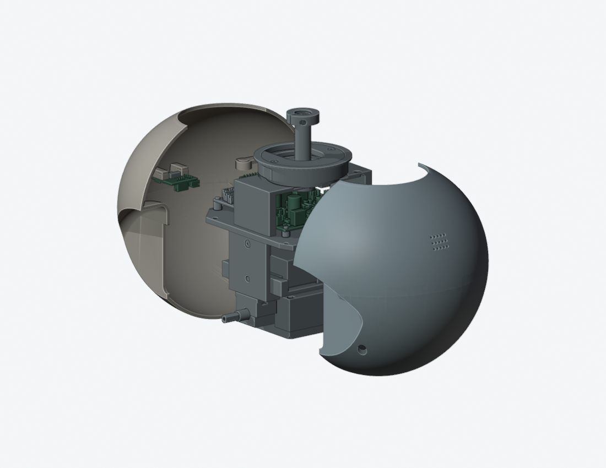
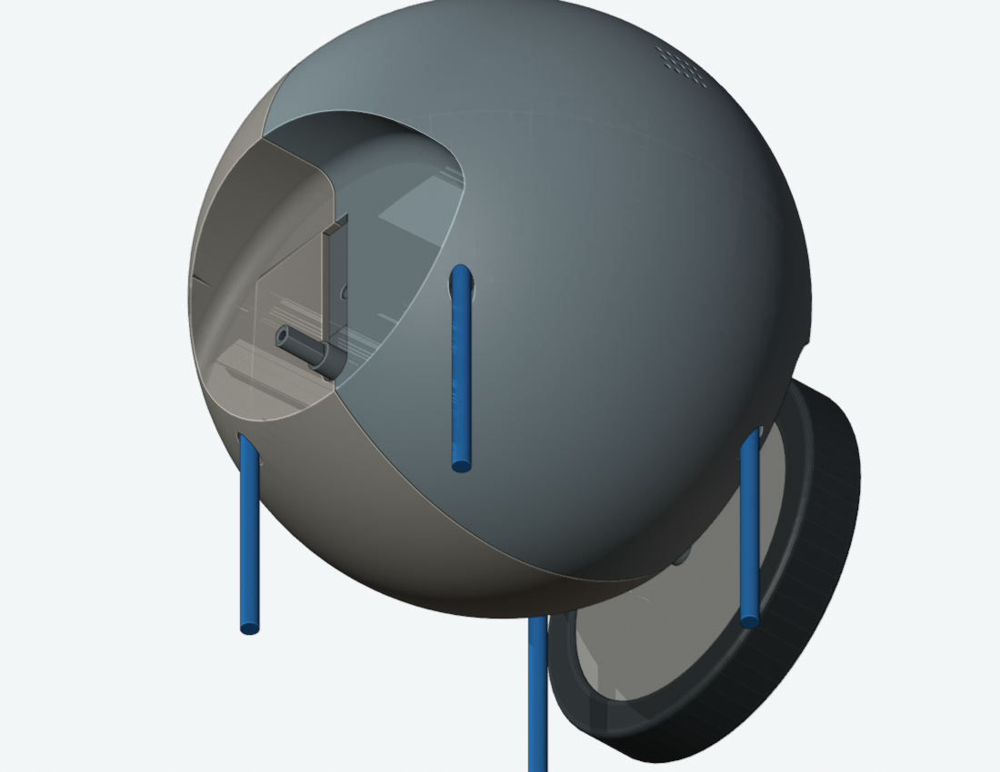

← 走线与装配工作页先锁紧内部，再从前后合上身体外壳
独立候选，尚未应用
前后分壳的刚体拆装、四处螺钉入口和 130 个头部姿态检查通过。它为头部连接提供了可操作空间；完整带线合壳、最终传动接口仍未通过。
主模型仍是 M1.49 C5＋K1。你已确认的压板孔壁修正保持，主 Blender、STL 和 M1.49-A1 动画没有被本候选替换。
改变的是身体分缝，打印件仍为两件
两图都隐藏了头部与右侧轮胎／轮毂，便于比较身体分缝；这些零件没有被设计删除。
| 项目 | 当前 | 候选 |
|---|
| 身体打印件 | 上壳＋下壳，共 2 件 | 前壳＋后壳，共 2 件 |
| 框架固定 | 4 枚螺钉＋4 个嵌件 | 沿用这 4 处位置、螺钉及嵌件，每半壳固定在两个点 |
| 原水平拼缝固定 | 4 枚螺钉＋4 个嵌件及壳内座 | 取消 |
| 外部变化 | 水平分缝，原下壳工具孔 | 改为前后分缝；壳体下部需要 4 个 Ø6.6 mm 工具孔，原拼缝孔封闭 |
| 硬件位置 | 当前主模型位置 | 板卡、扬声器、轴承、舵机与安装孔轴保持 |
内部连接先完成，外壳最后合拢

候选顺序：先装内部框架与头部连接，在外壳尚未安装时锁紧承重桥和反力连杆；再处理壳上扬声器、接口板的连接，最后从前后合壳，锁紧四枚框架螺钉。
- 两半壳各沿前后方向平移 220 mm，每 1 mm 检查一次；保留车轮的路径均未检出刚体相交。更远处已与核心组件的 Y 范围分离。
- 承重桥的两枚横向螺钉仍要在装轮胎／轮毂前操作；这部分工具与螺钉的连续轴向扫掠通过。
- 反力连杆可从正前方使用直柄工具。检查时壳体组件放在远离工具的台面位置；没有声称连接着短导线时也能移到该位置。
图中半壳分开 90 mm 是展示姿态，头部与导线隐藏。工具检查使用包络，实际螺钉头型啮合和拧紧扭矩不由几何检查认证。
内部工具与螺钉检查 · 候选来源、拆装路径及姿态检查
需要接受的代价：下部四个工具孔

蓝色表示工具轴线。四孔直径为 6.6 mm，用来从下方送入原有 M3 螺钉和工具。轴线位于原框架固定点 X＝±48、Y＝±42 mm；没有为了新分缝挪动 PCB 或框架孔。
四处工具及实际螺钉均按 150 mm 连续轴向进入／退出检查。原有螺钉与自身嵌件的名义螺纹接合单独记录；扫掠没有增加接合区域之外的相交，实体螺纹配合仍待实物确认。
确认的是结构方向，不是整机打样放行
建议接受前后分壳与四个下部工具孔，再按这个方向完成带线装配。以下事项仍保留：
- 两半壳下缘的定位与变形控制需要继续完善；壳体强度、螺钉预紧及 PA12 装配手感需要试打验证。
- 扬声器、后接口板的最终线长、接头操作和合壳中的导线避让尚未闭合。
- SCS0009 原配舵盘、传动叠层与反力连杆局部接口仍待厂家资料，不因新分缝自动通过。
- C6 及此前的导向、绑带座候选仍独立，尚未应用；本分壳检查保留主模型原承重桥与头架。
主模型、硬件、STL、动画未变核验 · 图片来源与隐藏项
此前尝试为何没有直接采用
- 上壳的 180 个倾斜／平移候选、三个头部偏航位置没有找到可用工具姿态：记录。
- 延后安装电源板 J3 的线端插头后，138 条短柄退出路径仍受 PCB、壳体或扬声器阻挡：记录。
- 依据 Wera 05027101001 官方尺寸 建立球头工具包络，1,442 个方向仍无可用直线进入通道：记录。25° 是研究范围，厂家未提供的允许角度没有被当作额定值。
- 这些有限搜索不证明所有手法都不可能。新候选改为让内部连接在外壳合拢之前完成。
- 检查脚本曾有一次括号语法错误，失败快照保留。实际螺钉头／杆分离改用原网格顶点，避免共面布尔切分留下极薄的宽头切片而夸大扫掠；原结果保留。没有缩小螺钉或放大安装孔来消除报错。
上一轮压板与反力连杆检查